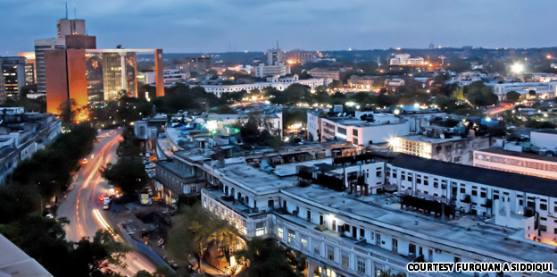

Delhi is a city that bridges two different worlds. Old Delhi, once the capital of Islamic India, is a labyrinth of narrow lanes lined with crumbling havelis and formidable mosques. In contrast, the imperial city of New Delhi created by the British Raj is composed of spacious, tree-lined avenues and imposing government buildings. Delhi has been the seat of power for several rulers and many empires for about a millennium. Many a times the city was built, destroyed and then rebuilt here. Interestingly, a number of Delhi's rulers played a dual role, first as destroyers and then as creators. The city's importance lies not just in its past glory as the seat of empires and magnificent monuments, but also in the rich and diverse cultures. No wonder chroniclers of Delhi culture - from Chand Bardai and Amir Khusro to present days writers - have never been at a loss for topics. In Delhi, you will discover that the city is sprinkled with dazzling gems: captivating ancient monuments, fascinating museums and art galleries, architectural wonders, a vivacious performing-arts scene, fabulous eating places and bustling markets. Delhi has been the political hub of India. Every political activity in the country traces its roots here. This was true even of the mythological era. The Pandavas of the Mahabharata had their capital at Indraprastha, which is believed to have been geographically located in today's Delhi.